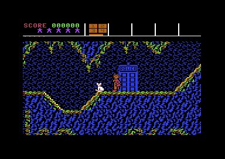
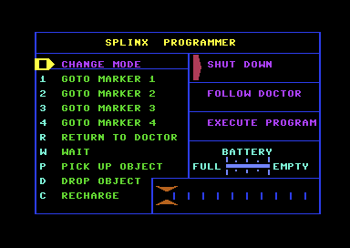
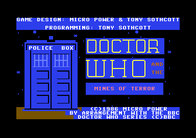
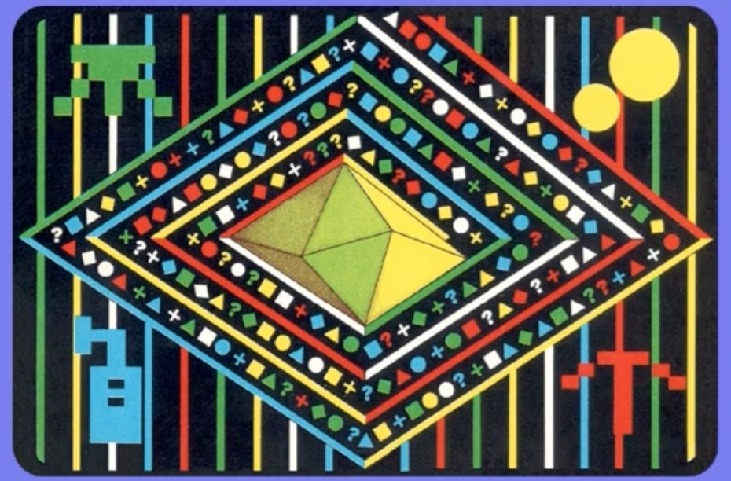

<meta charset="utf-8">
<meta name="viewport" content="width=device-width, initial-scale=1">
<title>Doctor Who and the Mines of Terror</title>
<link rel="preconnect" href="https://fonts.googleapis.com">
<link rel="stylesheet" href="https://fonts.googleapis.com/css2?family=Lato:wght@400;700;900&family=IBM+Plex+Mono:wght@400;500&display=swap">
<link rel="stylesheet" href="reference/dw-page.css">
<!-- tabs -->
<header class="hero">
  <p class="eyebrow">Commodore 64 · 1986 · Micro Power</p>
  <h1>Doctor Who and the Mines of Terror</h1>
  <p class="sub">The Sixth Doctor explores an alien mine with Splinx, a robot cat whose instructions you write yourself. Behind the adventure was a BBC Micro game that needed an extra ROM chip, followed by a Commodore version whose reviewers disagreed about almost everything except the music.</p>
</header>
<main class="wrap">
  <section id="adventure">
    <p class="fig">01 · The adventure</p>
    <h2 class="t">Into the mine</h2>
    <p>The Master, the Doctor’s renegade Time Lord adversary, has stolen plans for a machine that could interfere with the history of the universe. To power his Time Instant Replay Unit, he has taken over a heatonite mine on the second moon of Rijar. The Doctor’s mission is to recover the plans and stop production.<sup class="fn"><a href="about.html#src-8" title="Sinclair User, December 1985">8</a></sup><sup class="fn"><a href="about.html#src-1" title="GameBase64, Zzap!64’s review">1</a></sup><sup class="fn"><a href="about.html#src-3" title="Doctor Who and the Mines of Terror, release and story">3</a></sup></p>
    <p>The TARDIS deposits him in a cavern beside Splinx. From there, the mine scrolls in every direction through ladders, ledges, and machinery. The Doctor carries tools in four pockets, choosing what to take and what to leave for another journey. A spanner opens clamped ladders; a pick axe breaks through rock. Controllers patrol the passages, while a creature called the madrag guards her eggs.</p>
    <figure class="dw-shot"><figcaption>The arrival cavern. The status bar leaves room for the Doctor’s pockets and markers, which help turn exploration into a plan.</figcaption></figure>
    <p>Escape is the game’s only compulsory goal. The Time Lords judge what the Doctor achieves before leaving: recovering the plans and crystal, stopping the machine, and bringing Splinx home all improve his reward. Getting out alive can still mean returning from an unfinished mission.</p>
  </section>
  <section id="splinx">
    <p class="fig">02 · Splinx</p>
    <h2 class="t">Programming a companion</h2>
    <p>Splinx can follow the Doctor, wait where placed, or execute a program of up to ten commands. You place markers around the mine, then tell the cat which to visit, where to pick something up, and when to return. A battery limits how long Splinx can work before recharging.</p>
    <figure class="dw-shot"><figcaption>Splinx’s programming screen combines a command list with a battery gauge. A short program can send the cat to a marker, collect an object, and bring it back.</figcaption></figure>
    <p>The creatures’ behaviour gives those instructions a purpose. When the madrag finds an egg missing, she follows it and carries it back to her nest. Sending Splinx to take an egg draws her away, giving the Doctor time to reach the passage she guards.</p>
    <p>Splinx also offers a way past the Master. He pursues the crystal when the Doctor carries it, even in a pocket, but leaves it alone when the cat carries it. The companion’s usefulness depends on understanding who reacts to what. The <a href="gameplay.html#splinx">Gameplay page explains Splinx’s commands</a>, and the <a href="solution.html#madrag">Solution shows how to use them</a>.<sup class="fn"><a href="about.html#src-9" title="Euan, from playing the Commodore version">9</a></sup><sup class="fn"><a href="about.html#src-11" title="Stardot walkthrough, used where the Commodore code confirms it">11</a></sup></p>
  </section>
  <section id="release">
    <p class="fig">03 · The release</p>
    <h2 class="t">From Castle Quest to Doctor Who</h2>
    <p>Gary Partis wrote the original BBC Micro game. In a 2007 interview with Stuart Goodwin, Partis recalled that Micro Power approached him shortly after his eighteenth birthday. The publisher wanted a Doctor Who game resembling <i>Castle Quest</i>, Tony Sothcott’s scrolling platform adventure for the BBC Micro. Partis worked on it during sixth form and his first months at Newcastle Polytechnic.<sup class="fn"><a href="about.html#src-4" title="Gary Partis interviewed by Stuart Goodwin, 2007">4</a></sup></p>
    <p>The adventure exceeded the BBC Micro’s available memory. Repeated loading from cassette would have been impractical, Partis explained, so the 1985 release included a ROM chip that the player fitted inside the computer.<sup class="fn"><a href="about.html#src-4" title="Gary Partis on the BBC original’s memory requirement">4</a></sup><sup class="fn"><a href="about.html#src-3" title="Release years and the BBC ROM chip">3</a></sup></p>
    <p>The Commodore 64 and Amstrad CPC editions followed in 1986. On the C64, the title screen credits programming to Sothcott himself, and game design to Micro Power and Sothcott. Partis’s recollections describe the BBC original; the Commodore credits identify the people responsible for this edition.<sup class="fn"><a href="about.html#src-3" title="Release years">3</a></sup><sup class="fn"><a href="about.html#src-10" title="The original Commodore disk’s title screen">10</a></sup></p>
    <figure class="dw-shot"><figcaption>The original Commodore disk’s loading screen credits Tony Sothcott with programming, and Micro Power and Sothcott with game design.</figcaption></figure>
    <p>The project also put pressure on its publisher. Partis recalled that it caused Micro Power financial problems, partly because of the advertising. His account supports a more cautious conclusion than the later claim that the game’s development costs finished the company.<sup class="fn"><a href="about.html#src-4" title="Gary Partis on Micro Power’s finances">4</a></sup><sup class="fn"><a href="about.html#src-7" title="Tony Smith, The Register, 2013">7</a></sup></p>
    <p>A Spectrum edition was announced but never released. The C64 edition acquired a mistaken reputation for being unreleased too: preservation researcher Frank Gasking believed a <i>Commodore Force</i> feature that had included it among unreleased games, until he found an original copy.<sup class="fn"><a href="about.html#src-6" title="Frank Gasking, Games That Weren’t">6</a></sup></p>
    <p><i>The <a href="about.html#sources">source register records Partis’s interview, the release history, and the original disk’s credits</a>.</i></p>
  </section>
  <section id="reception">
    <p class="fig">04 · Reception</p>
    <h2 class="t">A large box and divided reviewers</h2>
    <p>The Commodore release cost £11.95 on cassette and £14.95 on disk. Its packaging included a map and a coloured code card, as well as extensive documentation. The card belonged to the adventure: a lock in the mine gives clues that the player uses to find a sequence of shapes on it.<sup class="fn"><a href="about.html#src-1" title="GameBase64, Zzap!64’s review and prices">1</a></sup><sup class="fn"><a href="about.html#src-12" title="Ken McMahon, Commodore User 29, February 1986">12</a></sup></p>
    <figure class="dw-shot"><figcaption>The card turns clues from the mine’s lock into a six-shape answer. The <a href="solution.html#lock">lock demonstration</a> lets you try the same system.</figcaption></figure>
    <p>For Ken McMahon in <i>Commodore User</i>, the contents of the box raised expectations the game failed to meet. He found the adventure disappointing, struggled to make Splinx obey, and objected to the long pause after the Doctor lost a life.<sup class="fn"><a href="about.html#src-12" title="Ken McMahon, Commodore User 29, February 1986">12</a></sup></p>
    <p><i>Zzap!64</i> reached a different judgment, awarding 86%. Its reviewers valued the depth of play more than the presentation of the mine itself. The reviewer initialled GL found it “enthralling and enjoyable to play” once the player became involved.<sup class="fn"><a href="about.html#src-14" title="Zzap!64 13, May 1986">14</a></sup></p>
    <p><i>Computer and Video Games</i> praised the scale while finding the adventure ordinary. In <i>Your Commodore</i>, reviewer J.G. found the challenges “difficult but logical” and singled out the Doctor’s casual walking animation. Those judgments describe the same tension: a large place to explore, with puzzles whose appeal depended on whether their demands drew the player in.<sup class="fn"><a href="about.html#src-15" title="Computer and Video Games 55, May 1986">15</a></sup><sup class="fn"><a href="about.html#src-13" title="J.G., Your Commodore 21, June 1986">13</a></sup></p>
    <p>The music attracted much less disagreement. <i>Zzap!64</i> complained about its repetitive accompaniment and asked where the familiar television theme had gone. J.G. recommended playing with the volume turned off, despite recommending the game overall. The <a href="music.html">Music page plays the five in-game tunes</a>.<sup class="fn"><a href="about.html#src-14" title="Zzap!64’s comments on the music">14</a></sup><sup class="fn"><a href="about.html#src-13" title="Your Commodore’s comments on the music">13</a></sup></p>
  </section>
  <section id="explore">
    <p class="fig">05 · Inside the game</p>
    <h2 class="t">What the mine keeps hidden</h2>
    <p>Some puzzles become especially clear when their rules are visible. The heatonite machine starts with lettered circuits spelling START. Replacing two circuits makes the first four slots spell STOP, and the machinery comes to a halt. The <a href="solution.html#step-machine">map and solution</a> show where those replacement letters lie.</p>
    <p>Other rules are less helpful to the player. Bringing Splinx to the exit is insufficient for the rescue bonus: the Doctor must pick the cat up and carry it out. The game also keeps an unseen time bonus, but reduces it only once every 21.8 minutes.</p>
    <p>The <a href="levels.html#mine">interactive mine map</a> locates the objects and follows routes through the adventure. The <a href="graphics.html">Graphics page animates the Doctor and the TARDIS</a>, while <a href="discoveries.html">Discoveries explains the slow timer and the save that ends the session</a>.</p>
  </section>
</main>
<script src="reference/dw-page.js"></script>
